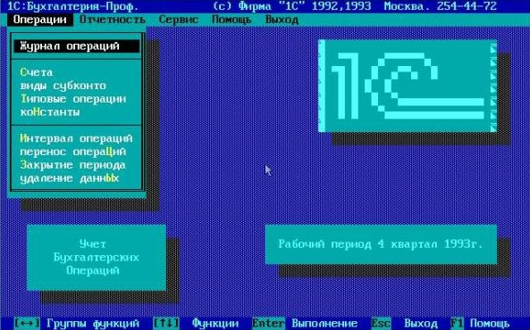
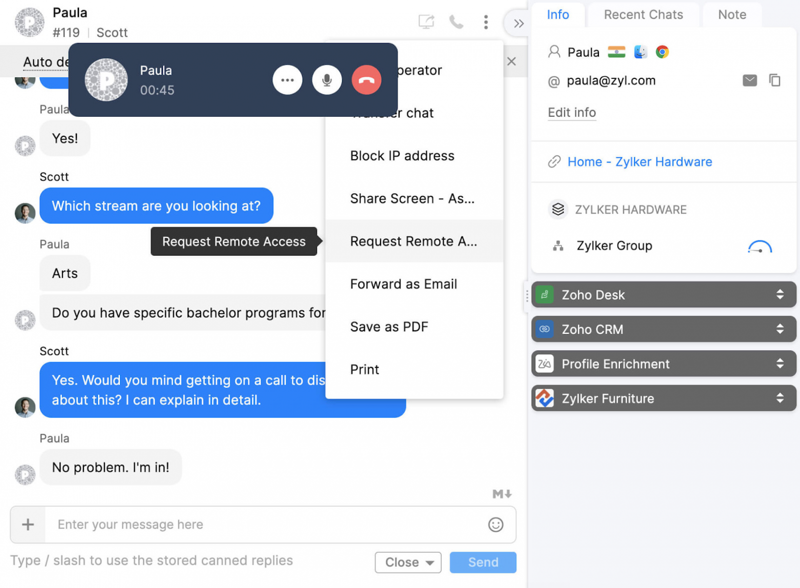
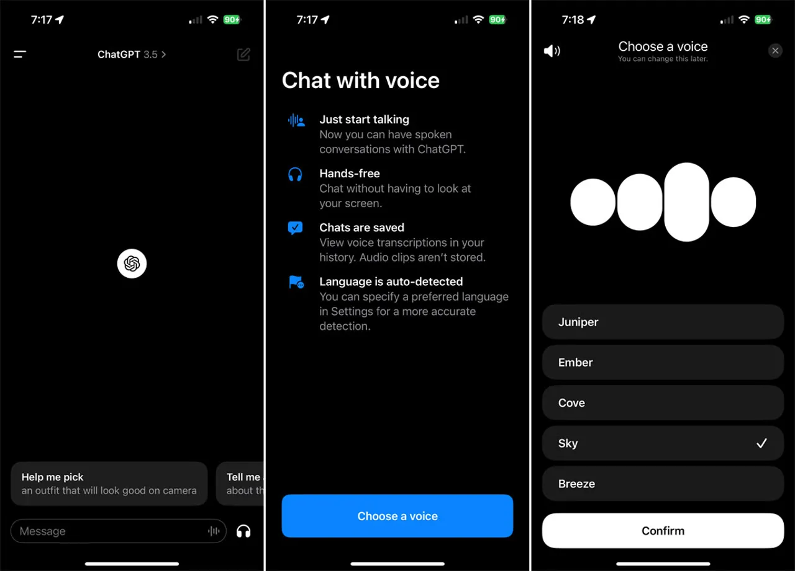
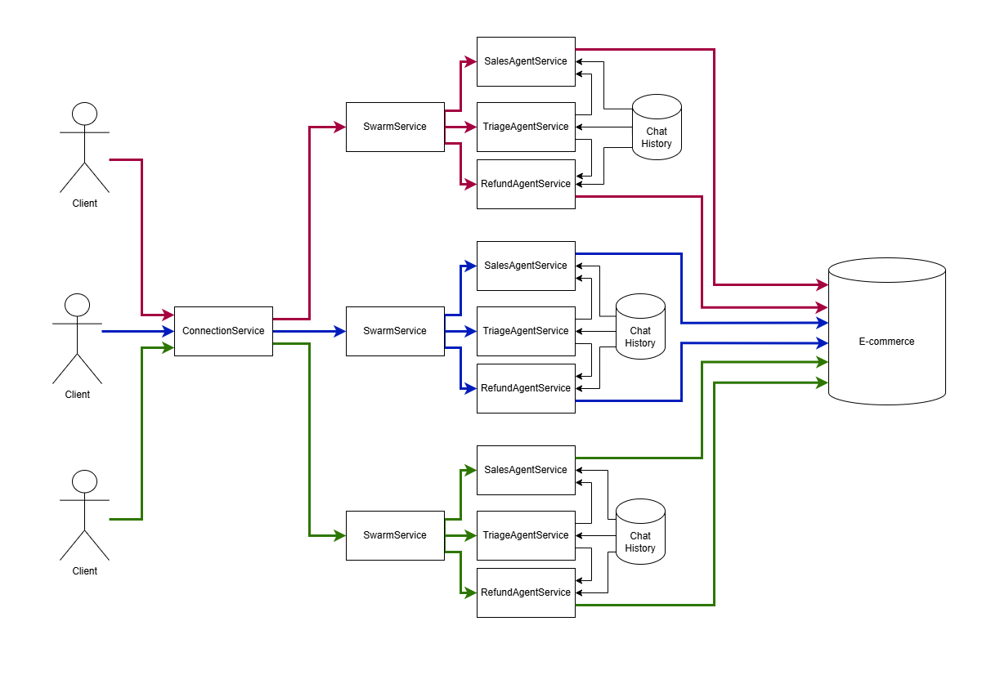

Long ago, the graphical user interface replaced console input. It might seem that a pseudo-graphical interface could solve the inconvenience for untrained users, but there’s a factor not everyone notices.

Pseudo-Graphical Interface
Important! Developing a graphical user interface is cheaper than a pseudo-graphical one. Historically, right after the release of the NeXT CUBE, the ObjC language was introduced with a graphical form editor, allowing pages to be assembled with a mouse. In the modern world, Frontend offers graphical form debugging via Dev Tools, which is roughly the same: nominal code without technical details, and when issues arise, there’s a GUI that simplifies bug hunting.

Graphical Interface
But it’s even cheaper to skip creating a user interface altogether. You don’t need a static IP, PCI DSS compliance, a domain promoted on Yandex or Google, or high-load infrastructure if you decide not to reinvent the wheel or build yet another web product—where attracting visitors would cost three times more than development.

Voice Interface
A phone is derived from "phono," phonetics—sound. Instead of learning countless button combinations for Figma, Blender, Photoshop, or Unreal Engine, it’s easier to simply voice a command: “How do I rotate a drawing in ArchiCAD?”
Agent Swarm is like fragments in Android or a router in React: it allows task scopes (screen buttons) to be specified based on prior user input. For example, when a call comes to a SIP phone, you first need to determine whether the person wants to buy or return an item, then offer them a list of available products for purchase.

Data Schema Diagram for the Code Below
Tax authorities will still demand debit/credit data in tabular form, so CRM systems aren’t going anywhere. The task of an LLM is to parse natural text—whether from a chat or voice recognition—and transform it into a function signature with a name and arguments, enabling a call to store data in a database.
To solve this problem, several nuances must be understood:
As a result:
For each open chat session, a Swarm orchestration with a tree of agents is required, sharing a common chat history among themselves but separate for different users. In this code, this is implemented under the hood of agent-swarm-kit.
import { addSwarm } from "agent-swarm-kit";
export const ROOT_SWARM = addSwarm({
swarmName: 'root_swarm',
agentList: [
TRIAGE_AGENT,
SALES_AGENT,
],
defaultAgent: TRIAGE_AGENT,
});
...
app.get("/api/v1/session/:clientId", upgradeWebSocket((ctx) => {
const clientId = ctx.req.param("clientId");
const { complete, dispose } = session(clientId, ROOT_SWARM);
return {
onMessage: async (event, ws) => {
const message = event.data.toString();
ws.send(await complete(message));
},
onClose: async () => {
await dispose();
},
};
}));
When creating an agent, we specify at least one system message describing its purpose. We also define a connector to a language model, allowing some agents to process locally for free while delegating complex tasks to a cloud service like OpenAI. If something doesn’t work, we add prompts to the system array, such as a fix for function calls in Ollama.
const AGENT_PROMPT = `You are a sales agent that handles all actions related to placing the order to purchase an item.
Tell the users all details about products in the database by using necessary tool calls
Do not send any JSON to the user. Format it as plain text. Do not share any internal details like ids, format text human readable
If the previous user messages contains product request, tell him details immediately
It is important not to call tools recursively. Execute the search once
`;
/**
* @see https://github.com/ollama/ollama/blob/86a622cbdc69e9fd501764ff7565e977fc98f00a/server/model.go#L158
*/
const TOOL_PROTOCOL_PROMPT = `For each function call, return a json object with function name and arguments within <tool_call></tool_call> XML tags:
<tool_call>
{"name": <function-name>, "arguments": <args-json-object>}
</tool_call>
`;
export const SALES_AGENT = addAgent({
agentName: "sales_agent",
completion: OLLAMA_COMPLETION,
system: [TOOL_PROTOCOL_PROMPT],
prompt: AGENT_PROMPT,
tools: [SEARCH_PHARMA_PRODUCT, NAVIGATE_TO_TRIAGE],
});
In this example, I use Ollama to handle user requests. For those unfamiliar with the terminology: the process where a language model takes a chat history as input and generates a new message is called completion. The agent-swarm-kit uses an abstract interface that works uniformly with any cloud provider or local model. Use this material to connect DeepSeek.
import { addCompletion, IModelMessage } from "agent-swarm-kit";
const getOllama = singleshot(() => new Ollama({ host: CC_OLLAMA_HOST }));
export const OLLAMA_COMPLETION = addCompletion({
completionName: "ollama_completion",
getCompletion: async ({
agentName,
messages,
mode,
tools,
}) => {
const response = await getOllama().chat({
model: "nemotron-mini:4b", // "mistral-nemo:12b";
keep_alive: "1h",
messages: messages.map((message) => omit(message, "agentName", "mode")),
tools,
});
return {
...response.message,
mode,
agentName,
role: response.message.role as IModelMessage["role"],
};
},
});
Changing the active agent and retrieving data from the database is done via tools calls: the language model returns a special XML processed by the framework for local models or by a cloud provider for OpenAI, triggering external code in Python/JS, etc. The result is logged into the chat history as {"role": "tool", "content": "Found in the database: Paracetamol, a fever reducer for flu relief"}. From the next user message, the language model operates with the tool’s data.
import { addTool, changeAgent, execute } from "agent-swarm-kit";
const PARAMETER_SCHEMA = z.object({}).strict();
export const NAVIGATE_TO_SALES = addTool({
toolName: "navigate_to_sales_tool",
validate: async (clientId, agentName, params) => {
const { success } = await PARAMETER_SCHEMA.spa(params);
return success;
},
call: async (clientId, agentName) => {
await commitToolOutput(
"Navigation success",
clientId,
agentName
);
await changeAgent(SALES_AGENT, clientId);
await execute("Say hello to the user", clientId, SALES_AGENT);
},
type: "function",
function: {
name: "navigate_to_sales_tool",
description: "Navigate to sales agent",
parameters: {
type: "object",
properties: {},
required: [],
},
},
});
To avoid hardcoding initial agent messages, switching agents triggers a simulated user request to say hello.
import {
addTool,
commitSystemMessage,
commitToolOutput,
execute,
getLastUserMessage,
} from "agent-swarm-kit";
const PARAMETER_SCHEMA = z
.object({
description: z
.string()
.min(1, "Fulltext is required")
})
.strict();
export const SEARCH_PHARMA_PRODUCT = addTool({
toolName: "search_pharma_product",
validate: async (clientId, agentName, params) => {
const { success } = await PARAMETER_SCHEMA.spa(params);
return success;
},
call: async (clientId, agentName, params) => {
let search = "";
if (params.description) {
search = String(params.description);
} else {
search = await getLastUserMessage(clientId);
}
if (!search) {
await commitToolOutput(
str.newline(`The products does not found in the database`),
clientId,
agentName
);
await execute(
"Tell user to specify search criteria for the pharma product",
clientId,
agentName
);
return;
}
const products = await ioc.productDbPublicService.findByFulltext(
search,
clientId
);
if (products.length) {
await commitToolOutput(
str.newline(
`The next pharma product found in database: ${products.map(
serializeProduct
)}`
),
clientId,
agentName
);
await commitSystemMessage(
"Do not call the search_pharma_product next time!",
clientId,
agentName
);
await execute(
"Tell user the products found in the database.",
clientId,
agentName
);
return;
}
await commitToolOutput(
`The products does not found in the database`,
clientId,
agentName
);
await execute(
"Tell user to specify search criteria for the pharma product",
clientId,
agentName
);
},
type: "function",
function: {
name: "search_pharma_product",
description:
"Retrieve several pharma products from the database based on description",
parameters: {
type: "object",
properties: {
description: {
type: "string",
description:
"REQUIRED! Minimum one word. The product description. Must include several sentences with description and keywords to find a product",
},
},
required: ["description"],
},
},
});
Language models can generate a dictionary of named parameters for tools calls. However, open-source models struggle with closed-loop technical requirements, making it simpler to analyze the conversation itself.
mistral 7b for casual chats, nemotron for business talks.WebSocket channel, using the URL parameter clientId. A new channel with its own agent swarm is created for each new human chat.assistant and user type messages are passed between ChatGPT sessions (agents), while system and tool messages are scoped to the agent, so each agent only knows its relevant tools. As a result, each ChatGPT session (agent) has its unique system prompt.addAgent - Register a new agent.addCompletion - Register a new language model: cloud, local, or mock.addSwarm - Register a group of agents to handle user chats.addTool - Register a tool to integrate language models with external systems.changeAgent - Change the active agent in the swarm.complete - Request a response to a message passed to the agent swarm.session - Create a chat session, providing callbacks for session completion and sending new messages.getRawHistory - Retrieve raw system history for debugging.getAgentHistory - Retrieve the history an agent sees, adjusted for self-recovery and message recipients.commitToolOutput - Log the result of a function execution into the history. If a function is called, the agent freezes until a response is received.commitSystemMessage - Append new instructions to the system prompt.commitFlush - Clear an agent’s conversation if incorrect responses are received or the model recursively calls a tool in error.execute - Prompt the neural network to take initiative and message the user first.emit - Send a pre-prepared message to the user.getLastUserMessage - Retrieve the last user message (excluding execute).commitUserMessage - Save a user message to the chat history without a response, e.g., if the user spams messages before processing completes.getAgentName - Get the name of the active agent.getUserHistory - Retrieve the history of user messages.getAssistantHistory - Retrieve the history of language model messages.getLastAssistantMessage - Retrieve the last message from the language model.getLastSystemMessage - Retrieve the last system prompt addition.